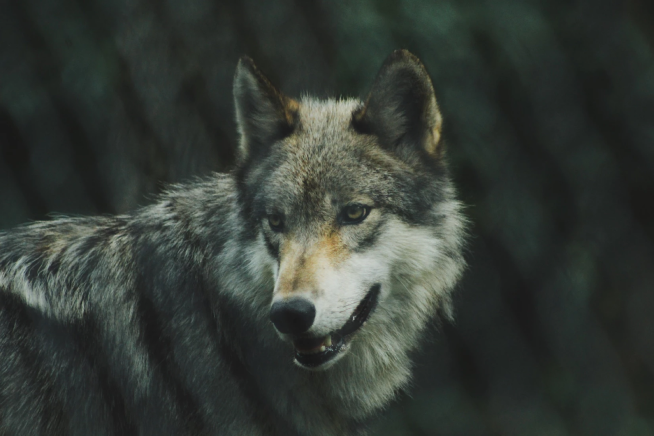
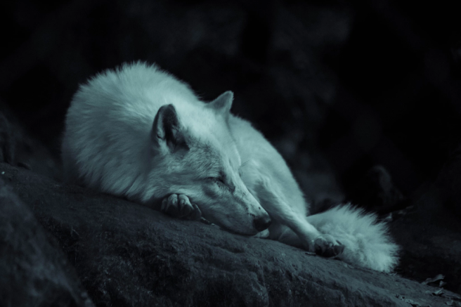

Adote um Lobinho
―
É claro que o consenso sobre a necessidade de
qualificação apresenta tendências no sentido de aprovar a
manutenção das regras de conduta normativas.
Sobre
O lobo é uma espécie de mamífero canídeo do gênero Canis.
É um sobrevivente da Era do Gelo, originário do Pleistoceno Superior,
cerca de 300 mil anos atrás.
É o maior membro remanescente selvagem da família canidae
Valores
Proteção
Carinho
Companheirismo
Resgate
Assim mesmo, o
desenvolvimento
contínuo de distintas
formas de atuação
facilita a criação do
sistema de
participação geral
Assim mesmo, o
desenvolvimento
contínuo de distintas
formas de atuação
facilita a criação do
sistema de
participação geral
Assim mesmo, o
desenvolvimento
contínuo de distintas
formas de atuação
facilita a criação do
sistema de
participação geral
Assim mesmo, o
desenvolvimento
contínuo de distintas
formas de atuação
facilita a criação do
sistema de
participação geral
Lobos Exemplo

Nome do Lobo
Idade: XX anos
Não obstante, o surgimento do comércio virtual faz parte de um processo de gerenciamento do levantamento das variáveis envolvidas.
Nome do Lobo
Idade: XX anos
Não obstante, o surgimento do
comércio virtual faz parte de um
processo de gerenciamento do
levantamento das variáveis
envolvidas.
